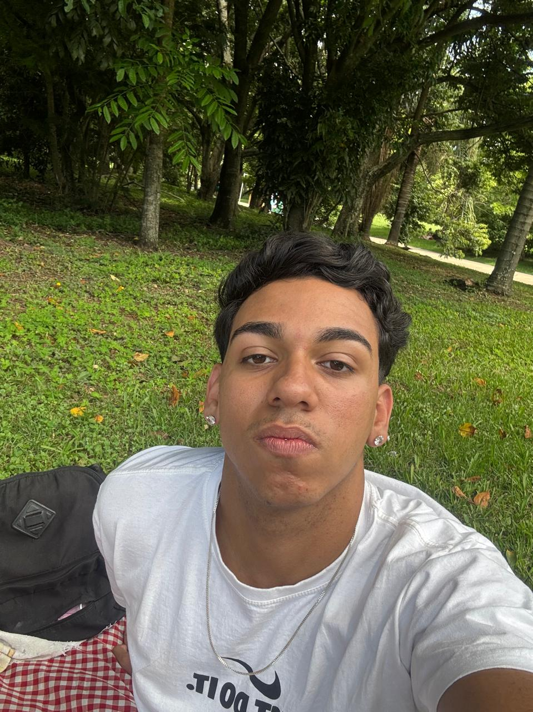

Transformando ideias em interfaces de alto desempenho. Com mais de 3 anos de experiência, foco em construir aplicações escaláveis, unindo eficiência técnica e as melhores práticas de UI/UX.
BAIXAR CV
Minha trajetória na tecnologia começou no ITB (Instituto Técnico de Barueri), onde realizei o Ensino Médio integrado ao curso Técnico em Informática. Esta base sólida me permitiu dominar lógica e fundamentos de programação precocemente.
Atualmente, busco o grau de Bacharel em Sistemas de Informação pela UNIP (Universidade Paulista), aprofundando meus conhecimentos em Engenharia de Software e arquitetura de sistemas.
Atuo como Desenvolvedor Full Stack no ramo de seguradoras, desenvolvendo soluções ponta a ponta com foco em qualidade, escalabilidade e Clean Code. Também participo ativamente das cerimônias ágeis, incluindo dailys, refinamento de demandas, plannings e retrospectivas, contribuindo com visão técnica, estimativas e evolução contínua das entregas.
Bacharelando em Sistemas de Informação, focado em Engenharia e Arquitetura.